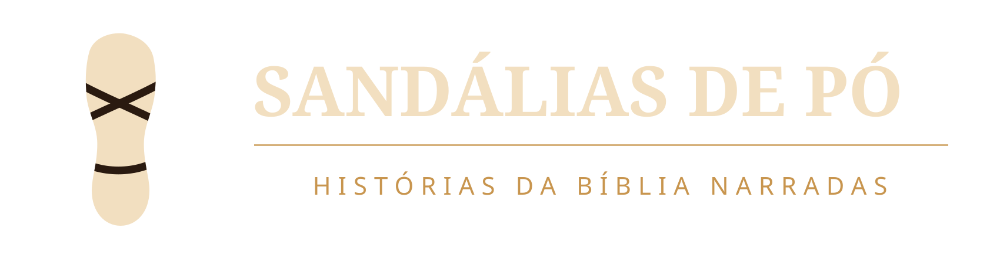

Termos de serviço
Sandálias de Pó · atualizados em 29 de outubro de 2026
O que é
Este site apresenta o canal Sandálias de Pó e o aplicativo que produz e publica seus episódios. O aplicativo é de uso exclusivo do dono do canal: não há cadastro, não há conta para criar e nenhum serviço é oferecido a terceiros.
Uso do site
As páginas são informativas e podem ser lidas livremente. O conteúdo dos episódios, a marca e as imagens do canal pertencem ao operador.
Serviços de API do YouTube
O aplicativo usa os Serviços de API do YouTube e opera de acordo com os Termos de Serviço do YouTube e com os Termos de Serviço dos Serviços de API do YouTube.
Sem garantias
O site é fornecido no estado em que se encontra, sem garantia de disponibilidade ou de ausência de erros. O operador não se responsabiliza por indisponibilidade de serviços de terceiros, YouTube incluído.
Contato
sandaliasdepo@gmail.com